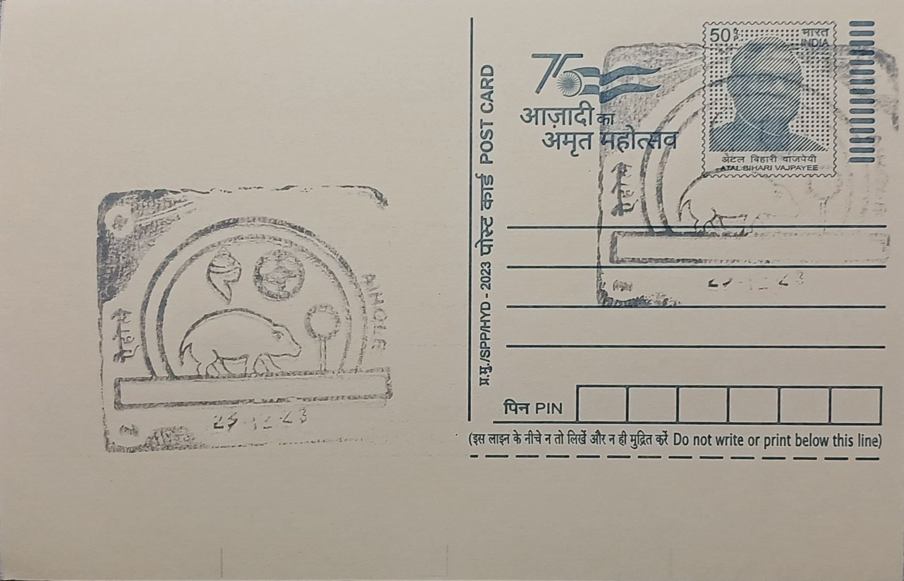

Chalukyan Royal Emblem
ಚಾಲುಕ್ಯ ರಾಜಲಾಂಛನ


The boar emblem of the Chalukyas traces its symbolic origin to Varaha, the third avatar of Vishnu, who in Hindu mythology plunged into the cosmic ocean to raise the submerged earth goddess Prithvi upon his tusks. The Early Western Chalukyas, who rose to prominence from Vatapi (modern Badami) in the sixth century, adopted this rescuing boar as their royal crest and paired it with an unusual imperial title, Sri-Prithivi-Vallabha, meaning roughly "beloved of Sri and Prithvi," casting the ruling dynasty itself as a chosen consort of fortune and earth. Verses invoking Varaha came to open many of the dynasty's land-grant inscriptions from the mid-seventh century onward, binding the emblem permanently to acts of royal patronage and legitimacy.
As a dynastic insignia, the boar emblem belongs to a broader South Asian tradition of animal-totem crests used by ruling houses to declare divine sanction, and its significance here is doubly religious and political: it marked the Chalukyas as Vaishnavites while asserting their right to rule the Deccan. The emblem's territorial heartland, Bagalkote district's triad of Badami, Aihole, and Pattadakal, is recognised as the crucible where Indian temple architecture matured, with Pattadakal inscribed as a UNESCO World Heritage Site in 1987 specifically for this experimental fusion of styles. Aihole itself, sometimes called the "cradle of Indian temple architecture," hosts well over a hundred temples spanning early trial forms to mature designs, giving the boar emblem a physical landscape of accumulated royal building activity to stand for.
The emblem's clearest material evidence survives in Chalukyan numismatics and epigraphy: gold coins known as Varaha Gadyanas depicted a caparisoned boar facing left beneath a sun and crescent moon, accompanied by Kannada legends naming the issuing king, while other issues paired the boar with temple motifs apparently modelled on Aihole's own shrines. In stone, the dynasty's historical self-image is captured in the Meguti temple inscription of 634-635 CE at Aihole, a nineteen-line Sanskrit eulogy composed by the Jain court poet Ravikirti for his patron Pulakeshin II, which recounts the king's campaigns and remains one of the earliest dated Chalukyan records. Temple-building at Aihole itself began under the Badami Chalukyas from roughly the sixth century, with structures such as the Lad Khan and Durga temples showing the dynasty testing Nagara and Dravidian forms side by side before the style matured downstream at Pattadakal.
A distinguishing episode tying emblem to place is the Meguti temple's own dedication: unusually for a dynasty whose crest invoked a Vaishnavite avatar, this particular monument was commissioned as a Jain shrine by Ravikirti, reflecting the religious plurality the Chalukyan court actually tolerated even while its royal iconography remained solidly Vishnu-centred. Pattadakal's later Virupaksha temple, raised around 740-745 CE by Queen Lokamahadevi to commemorate her husband Vikramaditya II's victory over the Pallavas of Kanchipuram, shows the same dynasty using monumental architecture, rather than the boar crest alone, to dramatise conquest and continuity, with its Dravidian vimana and narrative friezes serving as a deliberate counterpoint to Pallava prototypes it was built to surpass.
Today the Aihole-Badami-Pattadakal cluster is jointly administered by the Archaeological Survey of India and the Karnataka State Department of Archaeology, Museums and Heritage, which maintain site museums at both Aihole and Pattadakal housing recovered sculpture, inscribed slabs, and Chalukyan-era coin finds that keep the boar emblem's numismatic record on public display. Conservation work across the complex, including masonry consolidation at the Durga and Meguti temples, has proceeded alongside Pattadakal's World Heritage status, which brings periodic UNESCO monitoring missions to the site. The emblem survives now chiefly in museum collections and scholarly catalogues of Chalukyan coinage, studied less as a living royal symbol than as a dated marker historians use to trace which king issued which grant or built which shrine.
| Date of Introduction | February 28, 1990 |
|---|---|
| Address | Branch Postmaster, |
| Aihole BO, | |
| Bagalkote (dt.), Karnataka - 587124. |